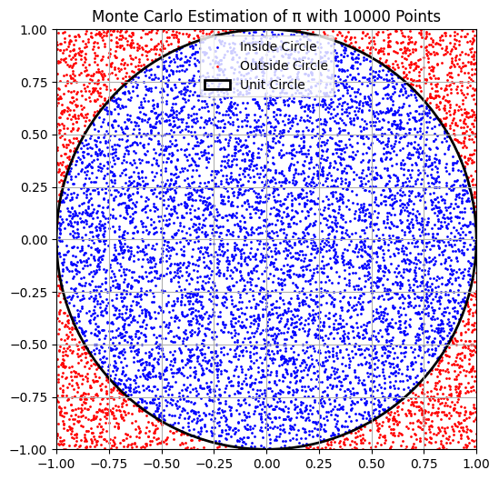
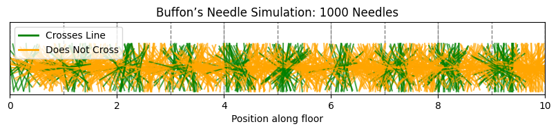

Problem 2
Estimating π: Theoretical Foundations
Part 1: Estimating π Using a Circle (Monte Carlo Method)
1.1 Geometric Probability Concept
To estimate π geometrically, we consider a unit circle inscribed in a square. The approach uses the idea of geometric probability — the probability of a random point falling inside the circle is proportional to the ratio of the circle's area to the square's area.
- Define a square of side length 2, centered at the origin: \(x, y \in [-1, 1]\).
- The inscribed circle has a radius \(r = 1\) and is centered at the origin.
The area of the square is: $$ A_{\text{square}} = 2 \times 2 = 4 $$
The area of the circle is: $$ A_{\text{circle}} = \pi r^2 = \pi \cdot 1^2 = \pi $$
Thus, the probability \(P\) that a randomly chosen point \((x, y)\) falls inside the circle is: $$ P = \frac{A_{\text{circle}}}{A_{\text{square}}} = \frac{\pi}{4} $$
This leads to the approximation: $$ \pi \approx 4 \cdot \frac{\text{Number of points inside circle}}{\text{Total number of points}} $$
1.2 Estimation Logic
We simulate \(N\) random points in the square. A point lies inside the circle if: $$ x^2 + y^2 \leq 1 $$
Let \(M\) be the number of points satisfying the condition above. Then: $$ \pi \approx 4 \cdot \frac{M}{N} $$
Part 2: Estimating π Using Buffon’s Needle
2.1 Problem Description
Buffon’s Needle is a classic probabilistic experiment proposed by Georges-Louis Leclerc, Comte de Buffon, in the 18th century. It estimates π based on the probability of a needle crossing lines on a plane.
Setup:
- Draw parallel horizontal lines spaced \(d\) units apart.
- Drop a needle of length \(l\) (\(l \leq d\)) onto the plane.
Let: - \(\theta\) be the acute angle between the needle and the lines: \(\theta \in [0, \pi]\) - \(x\) be the distance from the center of the needle to the nearest line: \(x \in [0, \frac{d}{2}]\)
A crossing occurs if: $$ x \leq \frac{l}{2} \sin \theta $$
2.2 Derivation of the Formula
The probability \(P\) of the needle crossing a line is: $$ P = \frac{2l}{\pi d} $$
Solving for \(\pi\) gives: $$ \pi \approx \frac{2l \cdot N}{d \cdot C} $$
Where: - \(N\) is the total number of throws - \(C\) is the number of crossings
2.3 Conditions for Validity
- \(l \leq d\)
- Random uniform distribution of both \(x\) and \(\theta\)
- Sufficiently large number of trials for convergence
Code and Plots
For Part 1: Circle-Based Estimation

Estimated π ≈ 3.120800
import numpy as np
import matplotlib.pyplot as plt
# Set number of random points
N = 10000
# Generate random points (x, y) in the square [-1, 1] x [-1, 1]
x = np.random.uniform(-1, 1, N)
y = np.random.uniform(-1, 1, N)
# Determine whether each point is inside the unit circle
inside_circle = x**2 + y**2 <= 1
# Estimate π
pi_estimate = 4 * np.sum(inside_circle) / N
print(f"Estimated π ≈ {pi_estimate:.6f}")
# Plotting
fig, ax = plt.subplots(figsize=(6, 6))
ax.set_aspect('equal')
ax.set_title(f'Monte Carlo Estimation of π with {N} Points')
# Plot points
ax.scatter(x[inside_circle], y[inside_circle], color='blue', s=1, label='Inside Circle')
ax.scatter(x[~inside_circle], y[~inside_circle], color='red', s=1, label='Outside Circle')
# Draw unit circle and square
circle = plt.Circle((0, 0), 1, color='black', fill=False, linewidth=2, label='Unit Circle')
ax.add_artist(circle)
ax.set_xlim([-1, 1])
ax.set_ylim([-1, 1])
ax.legend()
plt.grid(True)
plt.show()
For Part 2: Buffon’s Needle Estimation

import numpy as np
import matplotlib.pyplot as plt
# Simulation parameters
needle_length = 0.9
line_spacing = 1.0
num_needles = 1000
num_lines = 10
# Generate random centers and angles for each needle
x_center = np.random.uniform(0, num_lines * line_spacing, num_needles)
theta = np.random.uniform(0, np.pi, num_needles)
# Calculate the vertical projection from center to needle ends
dy = (needle_length / 2) * np.sin(theta)
# Determine which needles cross a line
crosses_line = (x_center % line_spacing) <= dy
# Estimate π
num_crossings = np.sum(crosses_line)
if num_crossings > 0:
pi_estimate = (2 * needle_length * num_needles) / (line_spacing * num_crossings)
print(f"Estimated π ≈ {pi_estimate:.6f}")
else:
print("No crossings occurred. Try increasing the number of needles.")
# Plotting
fig, ax = plt.subplots(figsize=(10, 6))
ax.set_title(f"Buffon’s Needle Simulation: {num_needles} Needles")
ax.set_xlim(0, num_lines * line_spacing)
ax.set_ylim(0, needle_length * 1.5)
# Draw parallel lines
for i in range(num_lines + 1):
ax.axvline(i * line_spacing, color='gray', linestyle='--', linewidth=1)
# Plot needles
for i in range(num_needles):
x0 = x_center[i]
y0 = 0.5
dx = (needle_length / 2) * np.cos(theta[i])
dy = (needle_length / 2) * np.sin(theta[i])
color = 'green' if crosses_line[i] else 'orange'
ax.plot([x0 - dx, x0 + dx], [y0 - dy, y0 + dy], color=color, alpha=0.7)
ax.set_aspect('equal')
ax.set_yticks([])
ax.set_xlabel('Position along floor')
plt.legend(handles=[
plt.Line2D([0], [0], color='green', lw=2, label='Crosses Line'),
plt.Line2D([0], [0], color='orange', lw=2, label='Does Not Cross')
])
plt.grid(True)
plt.show()